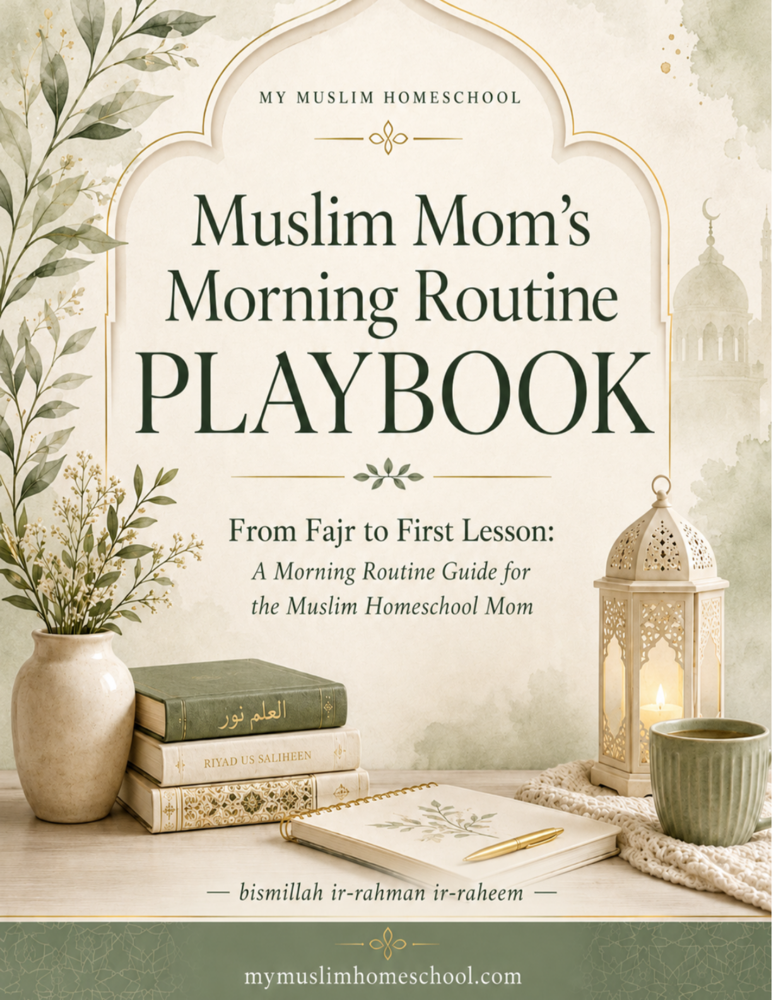
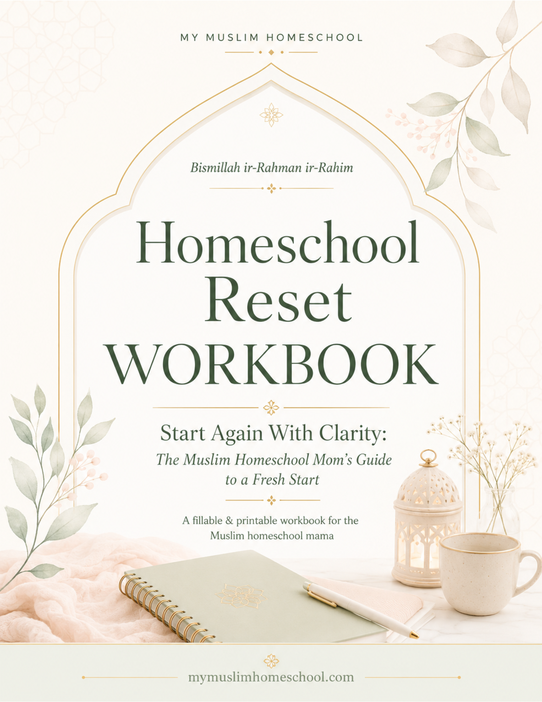
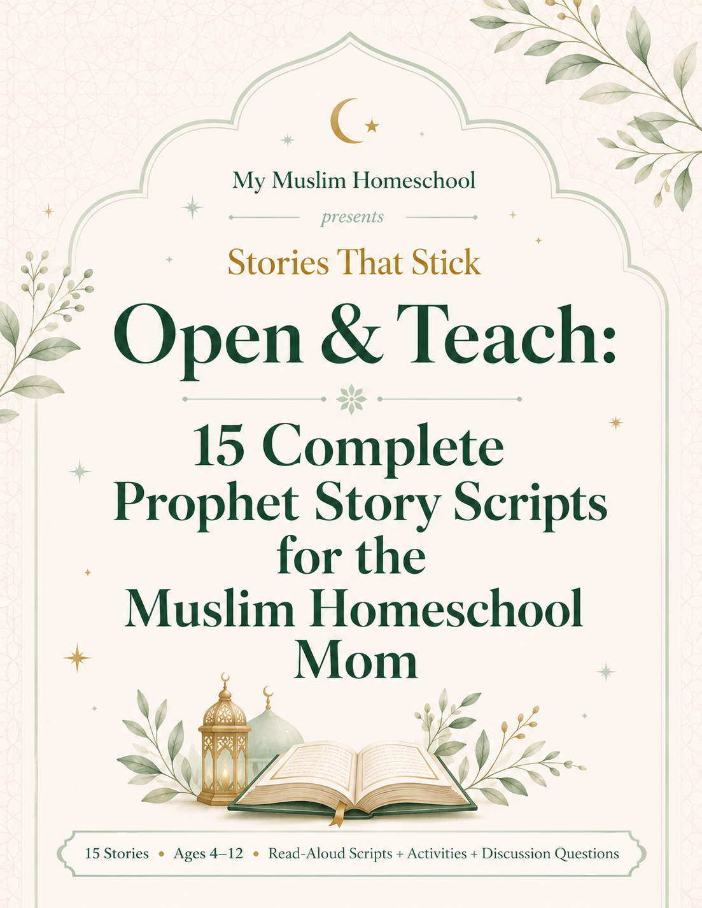
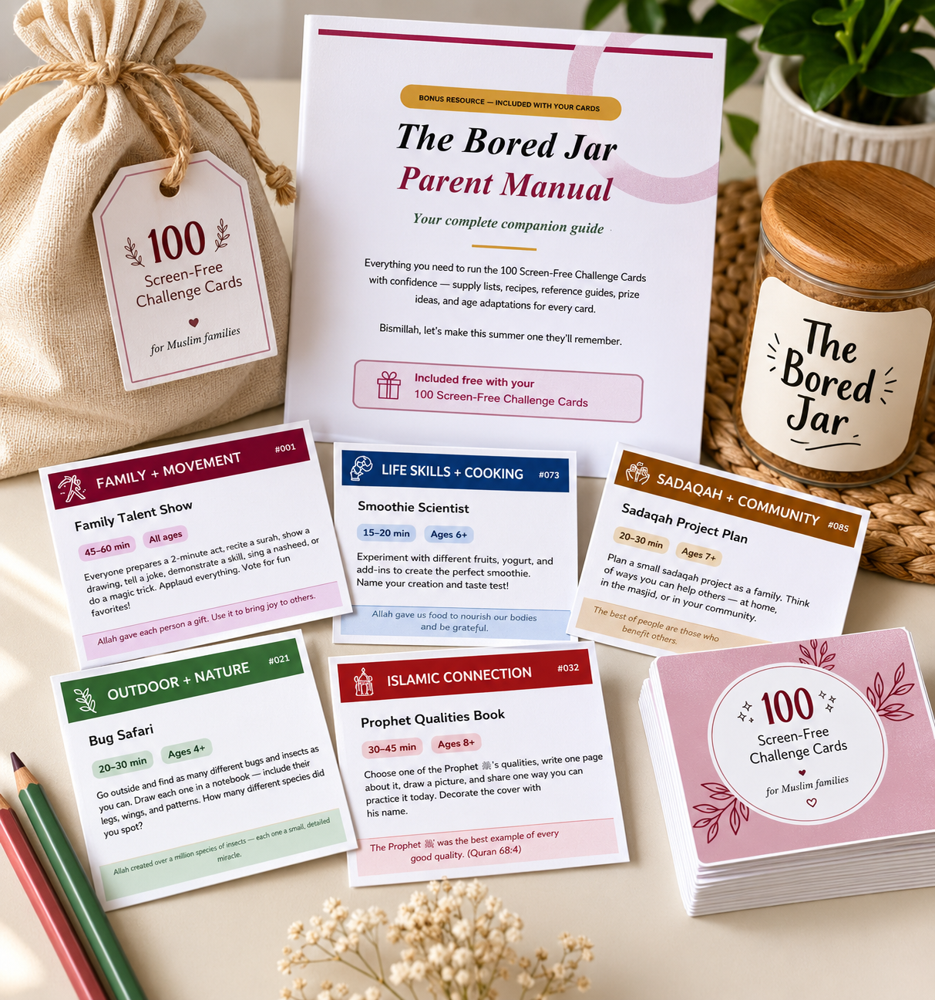

Morning Routine Playbook
Build a calm Fajr-to-first-lesson rhythm for Muslim homeschool mornings.
$7
View Resource— bismillah ir-rahman ir-raheem —
A simple structure for teaching Islamic studies at home without turning the deen into dry worksheets.
Get the Complete BundleSearch Intent
Children need knowledge, but they also need warmth, repetition, and lived practice. A strong Islamic studies rhythm gives them stories, language, habits, and family conversations that stick.
Choose one Prophet, one value, or one short du’a each week. Repeat it in different ways: read, discuss, draw, narrate, act through service, and connect it to family life.
Children remember what the home repeats. Display a du’a, keep story scripts accessible, use activity cards, and build Islamic language into normal family moments.
Product Previews

Build a calm Fajr-to-first-lesson rhythm for Muslim homeschool mornings.
$7
View Resource
Restart your homeschool with clarity, intention, and a simple plan.
$15
View Resource
Open-and-teach Islamic stories for ages 4-12 with discussion and activities.
$20
View Resource
100 meaningful printable activities for Muslim kids without screens.
$9.99
View ResourceFounder Credibility
My Muslim Homeschool is created by Haadiyah Rahman, a Muslim mother with lived homeschool experience. These pages are built for real mothers, real children, and real homes: simple enough to use, rooted in deen, and practical enough for messy weekdays.
You were chosen for this, and you do not have to build it alone.
FAQ
A balanced plan can include Quran, seerah, Prophet stories, du’a, adab, basic aqeedah, fiqh for daily life, and family practice.
A short daily rhythm is often better than one long weekly lesson. Even 10 to 20 minutes can build consistency.
Use one shared story or theme, then adjust the activity. Younger children can draw or retell; older children can write, discuss, or research.
They are a powerful foundation, but add Quran, du’a, manners, worship practice, and age-appropriate daily-life lessons.
Use the bundle to reset your rhythm, teach with less prep, and give your children meaningful Islamic learning at home.
Get the Complete Bundle — $35